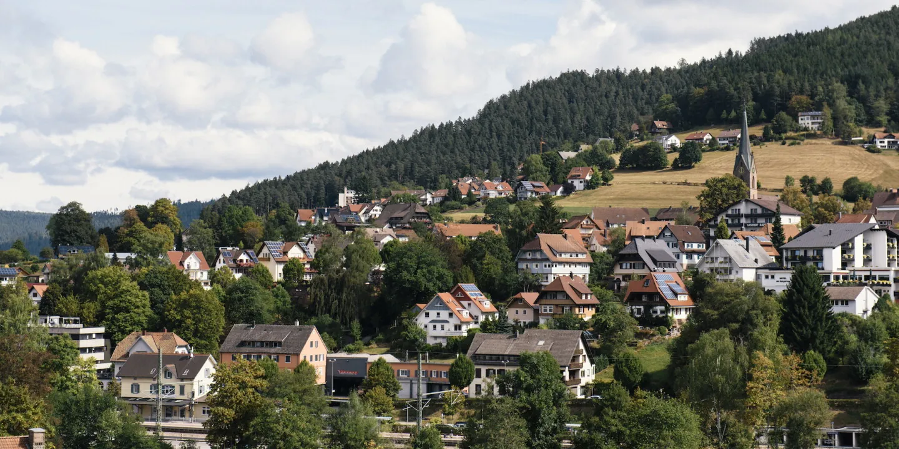

★ ★ ★
TORSTEN MICHEL · TONBACH
Modern technique with Asian and Nordic accents — the headline kitchen Germany hasn't dropped in thirty-three years.

The headline is real; the geography isn't. Three valleys, two three-star kitchens, one complimentary shuttle, and a 30 km radius of waterfalls, monasteries and treetop walks waiting for the gap between dinners.
Eight Michelin stars in a village of ~14,000 — but "Baiersbronn" is an administrative twenty-kilometre municipality of nine Ortsteile.[2] Pick a cluster, walk to dinner, use the inter-hotel shuttle once, day-trip the 30 km radius by car. The IT-conference cover story doesn't hold: the nearest serious event sits just past the line.
The Baiersbronn brand says village. The map says otherwise. Nine Ortsteile string along the Murg river for more than twenty kilometres,[2] and the four starred restaurants — two ★★★, two ★, and a striking zero ★★ in the current Guide — split themselves across three different side-valleys: Tonbach, Mitteltal, and Schwarzenberg.[3] "Walkable" is a thing you have to design for, not a thing you get for free.
The ★★ gap matters. With no two-star tier in town — the nearest is Le Pavillon in Bad Peterstal-Griesbach, some thirty kilometres away[3] — the choice between the two ★★★ rooms carries the entire weekend.
Modern technique with Asian and Nordic accents — the headline kitchen Germany hasn't dropped in thirty-three years.
Classical French execution and a dessert trolley that, by reputation, justifies the round-trip on its own.
Schwarzwaldstube is dark Mon–Tue. Bareiss is dark Mon–Wed.[13][11] Subtract the overlap and a single weekend window survives — Thursday through Sunday. Bareiss serves lunch Thu–Sun, which opens the one move that lets a single weekend cover both kitchens without doubling up on a single style: lunch at Bareiss, dinner at Schwarzwaldstube.
The classic of the Genießerpfade trail family — a 12.7 km loop ending at a 40 m waterfall that is manually sluiced on schedule by the village.[14]
The ridge-route chain: Schliffkopf → Lotharpfad → Ruhestein national-park centre → Mummelsee.[15] The classic Black-Forest drive, half a day end-to-end.
The B500's anchor: a small alpine cirque lake circled by a one-kilometre boardwalk and centuries of nixie legend — the ridge-route's natural finish line.[15]
A roofless Premonstratensian monastery above 90 m of cascading falls — Gothic stonework against running water.[16]
The Benedictine monastery and the still-working brewery on a single combination ticket.[17] Romanesque cloister in the morning, lager flight after.
Treetop walk + the Wildline suspension bridge + Palais Thermal — a trio routinely day-tripped via the 1908 Sommerbergbahn funicular. Past the strict 30 km circle, but worth the half-day.[18]
The only recurring tech programming inside the 30 km circle is the IHK Nordschwarzwald Innovation Breakfast AI series in Nagold — a two-hour morning briefing, not a conference.[19] The nearest serious event is WFCS 2026 in Offenburg, 21–24 Apr — 31.9 km Luftlinie but closer to 50 km on the forest road.[20][21] If you want both, treat them as two trips.
Is the Bareiss dessert trolley the once-in-a-lifetime experience that flips the order — lunch at Bareiss, dinner at Schwarzwaldstube — rather than the other way round?
Schwarzwaldstube versus Bareiss in detail: tasting menus, closure calendars, reservation lead time.
Why no single base puts all the stars on foot, and why Tonbach still wins stars-per-walk.
Genießerpfade, the B500, Allerheiligen, Alpirsbach, Bad Wildbad — what fits in a gap between dinners.
What lives inside the line versus just outside it: Nagold breakfasts, WFCS Offenburg, Datenschutzkonferenz.